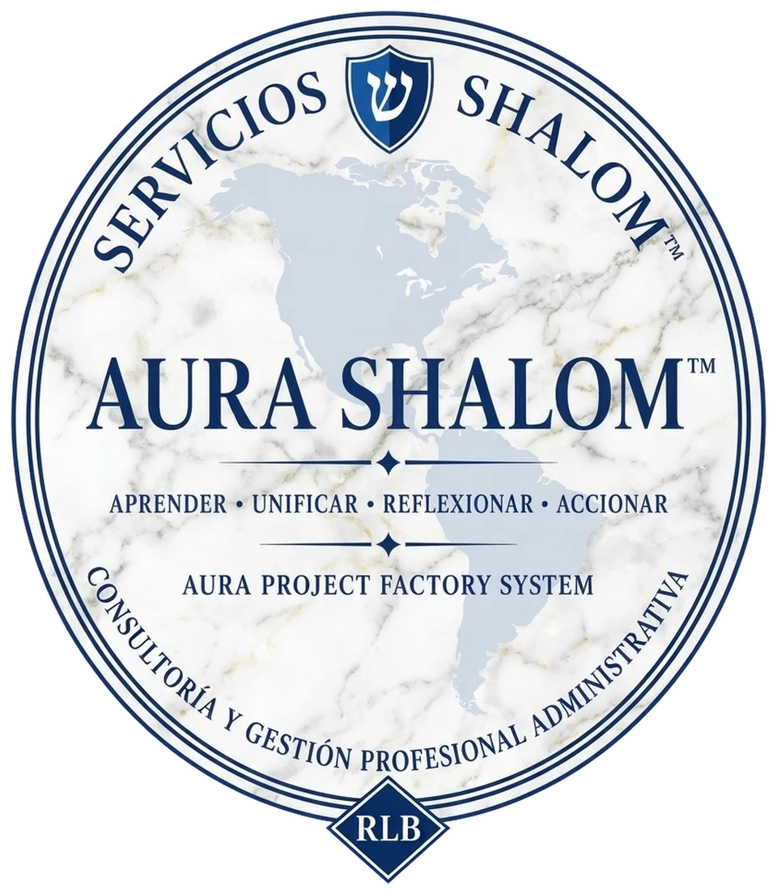

AURA Shalom™
Un ecosistema para aprender, comprender, integrar y accionar.
«Separar para comprender. Conectar para integrar».
Conocer AURAVer el estado del proyectoAURA Shalom™ es un proyecto en desarrollo. Esta página explica qué es, qué está construyendo y hacia dónde quiere evolucionar, distinguiendo siempre lo que ya existe de lo que todavía es diseño o intención.
01 · ¿Qué es AURA?
Un proyecto, una metodología y un ecosistema en construcción
AURA nace de la intención de convertir conocimiento, experiencia, reflexión y evidencia en procesos que permitan comprender problemas, organizar información, desarrollar soluciones y producir acciones concretas.
Es un ecosistema en desarrollo que busca integrar conocimiento, metodología, tecnología, investigación, aprendizaje y proyectos bajo una misma forma de trabajar.
No es una inteligencia artificial
Puede apoyarse en herramientas de IA, pero AURA es una forma organizada de trabajar, no un programa.
No es una religión ni una iglesia
No propone doctrinas ni pide adhesión. Respeta la autonomía de cada persona.
No es una empresa de trámites
Servicios Shalom MX es una línea empresarial particular, distinta del ecosistema AURA.
AURA SHALOM™ es un ecosistema en evolución. Su arquitectura central, AURA, está diseñada para integrar conocimiento, metodologías, inteligencia artificial, herramientas y capacidades humanas bajo principios de gobernanza, trazabilidad, evaluación y evolución controlada.
02 · ¿Por qué existe?
Porque el conocimiento disperso no se convierte solo en acción
Mucha información útil se queda aislada: en notas, conversaciones, archivos o experiencias que nadie documentó. AURA busca darle estructura para que pueda comprenderse, reutilizarse y llevarse a la práctica.
- Aprender de la experiencia y del conocimiento disponible.
- Unificar información que se encuentra dispersa.
- Reflexionar y analizar antes de tomar decisiones.
- Accionar mediante procedimientos, proyectos y soluciones.
- Documentar los aprendizajes para mejorar continuamente.
- Desarrollar herramientas que puedan ayudar a otras personas y organizaciones.
AURA no busca sustituir el pensamiento humano, sino proporcionar estructura para fortalecerlo.
03 · Metodología AURA
Aprender · Unificar · Reflexionar · Accionar
Aprender
Reunir experiencia, conocimiento y fuentes disponibles.
Unificar
Organizar en un solo lugar lo que estaba disperso.
Reflexionar
Analizar, contrastar y separar hechos de interpretaciones.
Accionar
Convertir lo comprendido en procedimientos, proyectos y soluciones.
Principios que orientan el proyecto
Sobre B10: B10 es el fundamento personal y espiritual del fundador, René López Barrera. Se menciona por transparencia y con respeto; no es una doctrina universal ni se impone a ningún visitante o participante.
04 · Rigor B12
Evidencia, pensamiento crítico y honestidad intelectual
B12 es el enfoque de rigor intelectual y documental de AURA. Su propósito es evitar que una opinión se convierta automáticamente en un hecho o que una hipótesis se presente como certeza.
| Categoría | Qué significa |
|---|---|
| Dato | Información concreta registrada, todavía sin interpretar. |
| Hecho documentado | Algo respaldado por una fuente verificable. |
| Declaración | Lo que alguien afirma; se registra quién lo dijo. |
| Interpretación | Una lectura o explicación de los datos. |
| Hipótesis | Una posibilidad que aún debe comprobarse. |
| Desconocido | Lo que no se sabe. |
| No determinado | Lo que con la evidencia actual no puede decidirse. |
Procedencia verificable
Toda evidencia debe poder rastrearse hasta su origen. Conservar el origen antes de construir conclusiones.
La IA es apoyo, no autoridad
Las respuestas generadas por IA se revisan; no son una fuente independiente de verdad ni sustituyen el criterio humano.
Producir no es verificar
Un resultado puede estar generado, revisado, aprobado, publicado o pendiente de corrección. Generarlo no significa validarlo.
05 · Arquitectura
Un ecosistema modular que puede crecer
Las ramas y módulos no son categorías decorativas: representan una arquitectura conceptual de desarrollo. Cada uno puede tener objetivos propios, desarrollar metodologías, organizar su información, generar proyectos, documentar resultados, compartir aprendizajes y evolucionar sin comprometer la estructura general.
Flujo del ecosistema
- AURA SHALOM™Ecosistema central
- Metodología y principios compartidosA·U·R·A, B12, principios
- Módulos especializadosRamas y habilidades reutilizables
- Proyectos, experimentos y aplicacionesUso concreto de la arquitectura
- Documentación, evaluación y mejora continuaLo aprendido regresa al ecosistema
↺ Lo aprendido y verificado puede volver a la memoria del ecosistema. Pueden incorporarse nuevas ramas en el futuro.
Arquitectura completa
AURA SHALOM™
Identidad del ecosistema
Arquitectura central AURA
Organización y coordinación: memoria, filtros, ramas, módulos y herramientas
Fundamentos y filtros
Organización y ejecución
Esquema conceptual propuesto, no representación de componentes técnicamente implementados. El mapa no es el territorio: este diagrama no significa que todos sus componentes estén programados, conectados o funcionando.
Cómo se distinguen las piezas
| Pieza | Papel |
|---|---|
| AURA Shalom™ | Identidad del ecosistema. |
| Arquitectura central AURA | Organización y coordinación. No es una sola IA ni un programa específico; puede usar distintos modelos y herramientas con una estructura común de criterios y supervisión. |
| B10, B12 y R1 | Fundamentos y filtros. B10: principios rectores del fundador. B12: rigor, evidencia y trazabilidad. R1: filtro personal cuando el trabajo corresponde al ámbito de René. |
| Ramas | Áreas especializadas de trabajo. |
| Módulos | Habilidades operativas reutilizables entre ramas. |
| Proyectos | Aplicaciones concretas de esa arquitectura. |
Cómo está pensada para funcionar
Estas son líneas de diseño de la arquitectura, no mecanismos ya implementados.
Memoria maestra y gestión del conocimiento
Una memoria organizada, actualizable y consultable que no pretende almacenar todo Internet, sino conservar conocimiento relevante que haya pasado por criterios de evaluación: fundamentos, metodologías aprobadas, investigaciones documentadas, proyectos anteriores, decisiones y sus justificaciones, procedimientos reutilizables, fuentes, versiones y correcciones. Distingue información confirmada, provisional, experimental y descartada.
Aprender no significa convertir automáticamente toda información recibida en conocimiento validado.
Filtros y preparación de tareas
Cada tarea puede pasar por los filtros pertinentes (B10, B12, R1, filtros de cada rama y requisitos del proyecto). No todos se aplican igual a todos los trabajos; depende de su naturaleza, objetivo y límites. El sistema recupera el contexto necesario y prepara instrucciones específicas.
Módulos y habilidades reutilizables
Ejemplos de módulos potenciales: video, audio, imágenes, documentos, investigación, desarrollo web, aplicaciones APK, dashboards, automatización, programación y diseño de prompts. Podrían desarrollarse internamente, integrarse desde código abierto, conectarse mediante APIs de terceros o usarse como servicios externos. La meta es poder cambiar de proveedor sin reconstruir la metodología.
Protocolo de ejecución e interoperabilidad
Antes de enviar una tarea a un módulo se prepara un paquete con objetivo, contexto, instrucciones, filtros, archivos de entrada, formato de salida, restricciones y criterios de evaluación. El resultado se revisa contra esos requisitos. Los módulos reciben solo la información necesaria y autorizada.
Aprendizaje y evolución controlada
Lo aprendido en un proyecto solo se incorpora a la memoria considerando procedencia, evidencia, utilidad, validación, aprobación, fecha y versión. Los principios fundamentales no cambian automáticamente por una investigación, una respuesta de IA o un experimento.
Interconexión entre módulos
Los módulos pueden trabajar de forma independiente y también intercambiar resultados cuando sea útil. Por ejemplo, una investigación puede generar conocimiento que después use un módulo empresarial, tecnológico o educativo, y el aprendizaje de un proyecto puede volverse documentación reutilizable para otros. Así el conocimiento no queda aislado.
Jerarquía de autoridad
Se distingue entre identidad y principios institucionales, decisiones de dirección, fundamentos metodológicos, normas de cada rama, instrucciones de proyecto y recomendaciones de herramientas o IA. Ningún módulo ni modelo de IA puede modificar por sí solo los fundamentos. Si hay instrucciones contradictorias, se identifica el conflicto, se conserva su procedencia y se pide resolución.
Capacidad de ejecución no significa autoridad para gobernar.
Procedencia y trazabilidad del conocimiento
Se distinguen hechos documentados, declaraciones, observaciones, interpretaciones, hipótesis, propuestas, información experimental, información pendiente de verificación, contradicciones e información descartada con su justificación. Cada registro puede incluir fuente, fecha, autor, proyecto de procedencia, estado de validación, versión, modificaciones y relaciones. Las versiones anteriores no desaparecen al actualizarse.
Conservar el origen antes de construir conclusiones.
Seguridad, privacidad y control de acceso
Niveles de información pública, privada, confidencial y restringida; autorizaciones para consultar, modificar o transmitir; protección de datos personales; separación entre memoria central y espacios externos; registro de operaciones y revocación de permisos.
Compartir capacidades no significa compartir toda la información.
Control de versiones
Los cambios importantes registran versión anterior, cambio propuesto, motivo, elementos afectados, responsable, fecha, estado de aprobación y resultado. Se pueden comparar y recuperar versiones; las actualizaciones no alteran en silencio los fundamentos.
Evolucionar sin perder la historia.
Evaluación y control de calidad
Los resultados se revisan según objetivo, exactitud, calidad técnica, consistencia, fuentes, restricciones, errores y necesidad de revisión humana. Se distingue entre resultado generado, revisado, aprobado, publicado y pendiente de corrección.
Producir no equivale a verificar.
Continuidad y resiliencia
Sustitución de proveedores, respaldos, recuperación de versiones, documentación de dependencias, procedimientos alternativos, exportación y migración entre plataformas. Si una herramienta externa deja de funcionar, no se pierden los fundamentos, metodologías ni documentación.
Ninguna herramienta individual debe convertirse en un punto único de dependencia.
Inteligencia artificial y colaboración humana
- La IA no sustituye el criterio humano.
- Las respuestas generadas por IA se someten a revisión.
- Las fuentes originales se conservan cuando son relevantes.
- Las conclusiones se distinguen de las interpretaciones.
- La responsabilidad de cada decisión queda identificada.
A las herramientas utilizadas no se les atribuye conciencia ni autonomía.
06 · Áreas de desarrollo
Ramas especializadas del ecosistema
Estos nombres representan líneas de trabajo y arquitectura conceptual. No están terminadas ni disponibles como servicio.
AURA Personal
Aprendizaje, autoconocimiento y desarrollo de procesos personales.
ConceptualAURA Empresarial
Organización, administración, estrategia y desarrollo de negocios.
ConceptualAURA Espiritual
Investigación y reflexión sobre fundamentos, conciencia, experiencia y evidencia.
ConceptualAURA Investigación
Análisis de información, acontecimientos, documentos y fuentes.
ConceptualAURA Tecnología
Herramientas digitales, automatización, inteligencia artificial y ciberseguridad.
ConceptualAURA Proyectos
Diseño, experimentación, documentación y desarrollo de iniciativas.
ConceptualNuevas ramas
La arquitectura está pensada para incorporar más ramas en el futuro.
ConceptualServicios Shalom MX es una línea empresarial particular, independiente de estas ramas. Su sitio: aurashalom.netlify.app.
07 · Estado del proyecto
Qué existe y qué sigue en construcción
AURA está en desarrollo. Cada componente se identifica según su estado real; un mismo componente puede tener capacidades en estados distintos.
Existe como idea, principio o propuesta arquitectónica.
Cuenta con estructura, documentación y especificaciones definidas.
Se está construyendo o integrando técnicamente.
Existe y puede utilizarse, aunque puede tener limitaciones.
Probado bajo criterios definidos, con evidencia de funcionamiento.
| Componente | Estado actual |
|---|---|
| Identidad, lema y metodología A·U·R·A | Diseñado Fundamentos definidos y documentados. |
| Rigor B12 (categorías de información) | Diseñado Metodología en construcción. |
| Arquitectura central AURA | Conceptual Propuesta arquitectónica. |
| Memoria maestra | Conceptual |
| Gobernanza transversal (permisos, versiones, calidad, seguridad) | Conceptual Línea de desarrollo, no plataforma implementada. |
| AURA IA (software para Windows sobre motor local Llama) | En desarrollo Primera aplicación técnica en construcción. |
| Ramas especializadas | Conceptual |
| Módulos de habilidades | Conceptual |
| Experimentos y pilotos | Sus resultados están pendientes de validación; no son resultados científicamente demostrados. |
Hoy ningún componente se presenta como Operativo ni Validado. Los estados se actualizarán solo cuando exista evidencia.
08 · Visión a futuro
Hacia una metodología reproducible
AURA aspira a desarrollar una metodología reproducible de aprendizaje, investigación, integración de conocimiento y ejecución de proyectos. Es una aspiración, no una realidad ya conseguida.
Su crecimiento deberá depender de:
Rigor intelectual + arquitectura modular + propósito humano.
09 · Contacto y autoría
Autoría transparente
AURA Shalom™ es impulsado por René López Barrera, fundador y responsable del desarrollo del proyecto. AURA tiene identidad, metodología y objetivos propios: la experiencia del fundador es punto de partida y campo de experimentación, no un resultado universal.